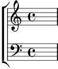

Refrain:
On a le cœur qui bat pour le chant d'un oiseau
On a les yeux fermés pour écouter les cœurs
On a le cœur qui bat pour le chant d'un oiseau
On a les yeux fermés au bonheur caché.
1. Quand la couleur se fane au soleil qui s'évade,
On a le cœur en rade,
La douceur n'est qu'un brin d'espoir.
Si tu reviens, je bâtirai
Des cathédrales à cent clochers
Je te dirai des mots de feu,
Des au revoir sans chagriner
Et puis le vent égaiera mille chansons sur les rochers.
Refrain
2. La vie paraît si lourde, la vérité si dure,
On veut rêver sans cesse
Les moments doux à prolonger.
Si tu reviens, je bâtirai
Des cathédrales à cent clochers ...
Coda:
On a le cœur qui bat pour le chant d'un oiseau
On a les veux fermés au bonheur caché.
La la la la la la ...
on a le cœur qui bat.